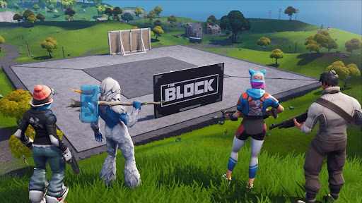

Fortnite Creativo: Explorando tu Imaginación
Fortnite Creativo es un emocionante modo de juego que ofrece a los jugadores la libertad de crear, construir y diseñar sus propios mundos dentro del universo de Fortnite. Este modo va más allá de las intensas batallas del Battle Royale y las misiones cooperativas de Salvar el Mundo, permitiendo a los jugadores ser los arquitectos de su propia experiencia de juego.
Libertad Creativa:
En el modo Creativo, los jugadores cuentan con una amplia gama de herramientas de construcción para dar vida a sus ideas. Desde la creación de estructuras impresionantes hasta la construcción de paisajes y desafíos personalizados, la única limitación es la imaginación del jugador. Cada isla en Creativo sirve como un lienzo en blanco, esperando ser moldeado según la visión única de su creador.

Compartir y Explorar Creaciones:
Una característica destacada del modo Creativo es la capacidad de compartir tus creaciones con la comunidad Fortnite. Los jugadores pueden publicar sus islas, permitiendo que otros las exploren, jueguen y, en algunos casos, incluso colaboren. Esta función fomenta una comunidad activa en la que la inspiración y la innovación se comparten de isla en isla.
Herramientas de Construcción:
Fortnite Creativo proporciona una variedad de herramientas para facilitar la construcción y la personalización del entorno. Los jugadores pueden colocar estructuras, modificar terrenos, agregar elementos decorativos y configurar la iluminación para crear atmósferas únicas. La facilidad de uso de estas herramientas permite que tanto principiantes como expertos den rienda suelta a su creatividad sin complicaciones.
Desafíos y Eventos Personalizados:
Fortnite Creativo no solo se trata de construir; también es un espacio para la diversión y los desafíos. Los jugadores pueden configurar sus propios juegos y eventos personalizados, desde carreras hasta campos de batalla diseñados a medida. Esto crea una experiencia única para aquellos que buscan algo más allá de los modos de juego tradicionales.
Creatividad en Constante Evolución:
Fortnite no solo ofrece emocionantes modos de juego, sino que también presenta una amplia variedad de armas, ítems y personajes únicos. Con eventos especiales, desafíos regulares y actualizaciones continuas, el juego se mantiene fresco y emocionante, brindando a los jugadores un motivo constante para regresar y explorar nuevas posibilidades.
El modo Creativo de Fortnite se mantiene fresco y emocionante gracias a las actualizaciones regulares que introducen nuevas herramientas, elementos y características. La evolución constante del modo asegura que los jugadores siempre tengan algo nuevo que descubrir y experimentar en sus creaciones.
Elaborado por: Rodriguez Ortiz Jorge Angel 6to 23
Escuela Preparatoria No. 1 UAEH
Aplicaciones computacionales web y móviles V2.1
6 de Febrero de 2024